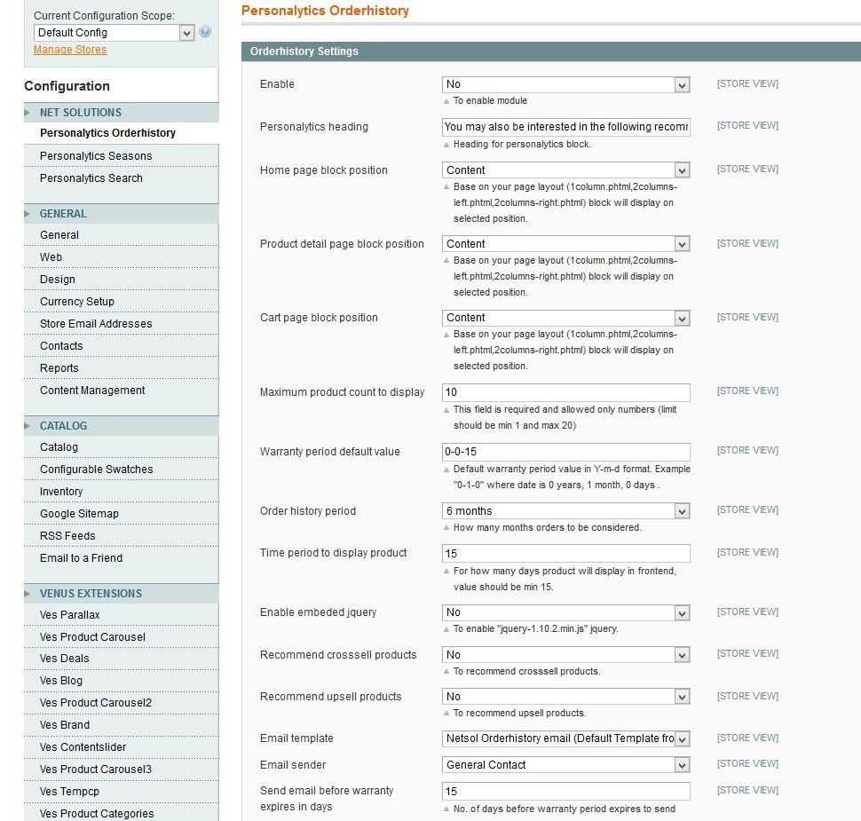
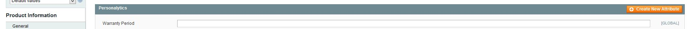

Product Recommendation based on Order History
Table of Contents
Description
Version 1.0.0
The present day eCommerce customers are highly accustomed to features like product recommendations and personalization.
A website that hosts features that help them save their browsing efforts and time are the most desirable.
While most of the retailers are leveraging big data to enhance the precision in personalized recommendations, it is time they classify the recommendations on the basis of the product category and apply all the intelligence in understanding the customer's consumption cycles.
Personalytics is one such Magento plugin/extension entails order history and the shelf-life of the product while framing the recommendations. This Extension also includes the feature of email Segmentation.
Features
- Product recommendation on the basis of expiration date of the purchased product
- Email segmentation, i.e sending email to customer if their purchased products are going to be expire in next coming days
- Flexibility to admin for settings of all the above features
Installation
Backup your data
Backup the database and your store's web directory.
Disable Compilation
This step is for Magento 1.4+ versions. If you are running an older version, this step can be skipped. In the Magento admin panel, go to System->Tools->Compilation. In case "Compiler Status" is "Enabled", click on the "Disable" button (in case the status is disabled you can skip this step):
Download and Extract
Download and extract (unzip) the extension's contents on you computer. Navigate inside the extracted folder.
Upload files
Using a FTP client, upload the content of the extension directory to the store's document root, so that the app directory in the extension folder overwrites the app directory on the server. If asked to replace any files, select "Yes".
Clear the cache
In the Magento admin panel, go to System->Cache Management and press the "Flush Magento Cache" button:
Configuration
After the extension is installed, you can visit System->Configuration->Net Solutions->Personalytics Order History Settings in the Magento admin panel to see the main configuration options:

Enable:
Admin option to enable or disable the extension. If you don't want to show recommendation block on any page then save this option as "No".
Personalytics heading:
Heading you want to show above the recommendation block
Home page block position:
With this setting,you can show the product recommendation block as per your theme on home page,i.e :-
- If the theme is "One Column Layout", then you can set block position as "Content"
- If the theme is "2 Columns Left Layout", then you can set block position as "Left"
- If the theme is "2 Columns Right Layout", then you can set block position as "Right"
- If you don't want to show the product recommendation block on homepage, you can set option as none
Product detail page position:
With this setting,you can show the product recommendation block as per your theme on product detail page,i.e :-
- If the theme is "One Column Layout", then you can set block position as "Content"
- If the theme is "2 Columns Left Layout", then you can set block position as "Left"
- If the theme is "2 Columns Right Layout", then you can set block position as "Right"
- If you don't want to show the product recommendation block on product detail page, you can set option as none
Cart page block position:
With this setting,you can show the product recommendation block as per your theme on cart page page,i.e :-
- If the theme is "One Column Layout", then you can set block position as "Content"
- If the theme is "2 Columns Left Layout", then you can set block position as "Left"
- If the theme is "2 Columns Right Layout", then you can set block position as "Right"
- If you don't want to show the product recommendation block on Cart page, you can set option as none
- If your layout is "3 Columns", then you can set the block in any position.
- Also you can put the block in any place as per your theme.
Maximum product count to display:
Maximum number of products you want to display on frontend in recommendation block, if it is more than 4 then carousel will appear
Warranty period default value:
If you don't want to go on each product and set the expiration value of product then we have make this feature also hassle free. Just set the value of Warranty period default value like 0-0-15, this means product will be expire in 15 days, if you want to give value in year in year, month and days, then you can set the value as 1-3-14, which means the products will be expire in 1 year,3 months and 14 days.
Order history period:
With this option you can select the time period for which order history is to be considered, i.e if you want to recommend products on the basis of past 6 months order only then you can select 6 months and so on.
Time period to display product
This is the settings for number of days you want to show the products from order history in recommendation block.The products will be shown before 1/3 rd of the days of the saved value and till 2/3 rd of the saved values. Suppose you have set the value of this field as "15" then product will be shown before 5 days (1/3*15) of the expiration time and will be shown till 10 days(2/3*15) on frontend
Enable embeded jquery
If Jquery is already added on your wesbite then set this option as "No"
Recommend crossell products
You want to show crossell products on frontend within the recommendation block.Please note the products which are assigned as crossell to the purchased products will be shown in the block
Recommend upsell products
You want to show related products on frontend within the recommendation block.Please note the products which are assigned as upsell to the purchased products will be shown in the block
Email template
The email template will be used to send email to customer, notifying the customers that their product is going to be expire
Email sender
Admin email ID from which mail will be send to customers
Send email before warranty expires in days
Number of days before the product expiration you want to send email to customer.
Catalog Settings
Setting expiration date product wise
Visit Catalog->Manage Products->Personalytics in the Magento admin panel to see how you can set product expiration date.

Troubleshooting
When I try to access your extension's configuration at System->Configuration->Personalytics Settings, I get a 404 error
Logout & Login back into the Magento admin panel.